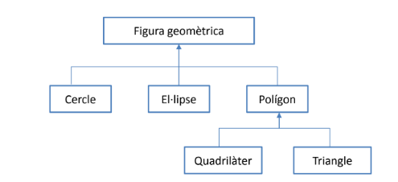

2.4 EXERCICIS
Volem fer un programa que sigui capaç de treballar amb diferents tipus de figures geomètriques. D'entrada ens cal
- treballar amb cercles, el·lipses, triangles, quadrilàters i polígons en general.
- mantenir una única taula amb figures geomètriques dels diferents tipus
- que existeixi la possibilitat de mostrar-les ordenades per àrea.
La herència és la següent:

Afegir també una clase Quadrat que només llegeixi el vèrtex inferior i el costat del quadrat.